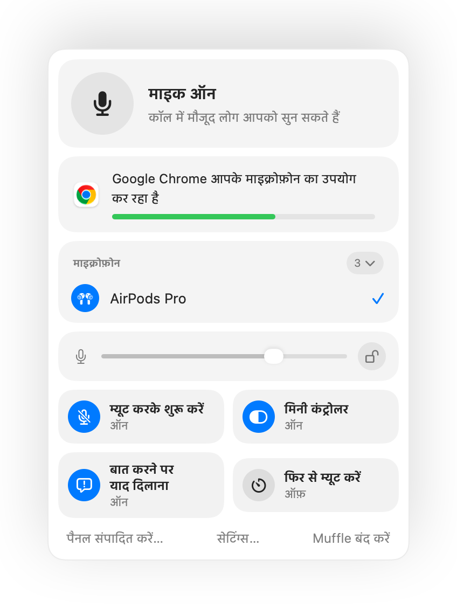

Mac पर Discord के लिए पुश टू टॉक और ग्लोबल म्यूट शॉर्टकट
Mac पर Discord के पुश टू टॉक को अतिरिक्त अनुमतियों की ज़रूरत होती है और यह ब्राउज़र में Discord के लिए काम नहीं करता। अगर आप Meet या Zoom कॉल में भी जुड़ते हैं, तो आपको हर ऐप के लिए अलग म्यूट की रखनी पड़ती है।
Muffle उन सभी के लिए एक ही बटन देता है। म्यूट करने के लिए इसे टैप करें, बात करने के लिए दबाए रखें या अपने AirPods दबाएं।
Muffle 3 दिन मुफ़्त आज़माएंMac App Store पर जल्द आ रहा है
Discord के लिए पुश टू टॉक सेट करें
- Muffle इंस्टॉल करें और माइक्रोफ़ोन तक पहुँच की अनुमति दें।
- Discord वॉइस चैनल में जुड़ें।
- म्यूट या अनम्यूट करने के लिए Control-Option-M दबाएं। बात करने के लिए म्यूट रहते हुए इसे दबाए रखें।
- Muffle सेटिंग्स में अपनी पसंद की कोई की चुनें, उदाहरण के लिए कोई F की।

- Muffle के शॉर्टकट के लिए किसी एक्सेसिबिलिटी अनुमति की ज़रूरत नहीं होती।
- अपना माइक्रोफ़ोन लेवल लॉक करें ताकि Discord का ऑटोमैटिक गेन इसे बार-बार न बदले।
अक्सर पूछे जाने वाले सवाल
क्या यह Discord के पुश टू टॉक जैसा ही है?
यह उसी तरह काम करता है, लेकिन एक साथ हर ऐप के लिए। Muffle खुद माइक्रोफ़ोन को म्यूट कर देता है, इसलिए जब तक आप की दबाए नहीं रखते, Discord को कुछ सुनाई नहीं देता।
क्या AirPods से Discord म्यूट किया जा सकता है?
हाँ। वॉइस कॉल के दौरान, म्यूट या अनम्यूट करने के लिए AirPods स्टेम दबाएं।